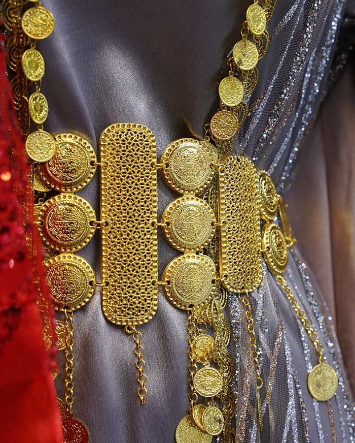

Kapak — Fotoğraf: Enasiqph · CC BY-SA 4.0 · KaynaklarBu yazıda yöresel bir kıyafeti eline aldığında kaliteyi nasıl okuyacağını öğreneceksin: nakışın el işi mi makine işi mi olduğunu ayırt eden dört somut işaret, dikişin sağlamlığını gösteren ölçüler (santimdeki ilmek sayısı, dikiş payı genişliği, kenar temizliği), astarın neden fiyattan daha çok şey anlattığı, pul ve payetin sökülüp sökülmeyeceğini gösteren basit bir çekme testi, fermuar ile ilik kontrolü, çizgili ve ekose kumaşlarda desen hizası, ucuz üründe ilk hangi noktanın bozulduğu ve dükkânda ya da fotoğraf üzerinden iki dakikada uygulayabileceğin bir kontrol listesi. Hiçbiri uzmanlık gerektirmiyor; sadece nereye bakacağını bilmek yetiyor.
El nakışı ile makine nakışını ayıran dört işaret
El nakışı ile makine nakışı arasındaki fark, çoğunlukla ön yüzden değil arka yüzden, kenardan ve tekrardan anlaşılır. İkisi de kaliteli olabilir; mesele hangisini aldığını bilmektir. Fiyat farkı da buradan doğar: aynı büyüklükteki bir göğüs nakışı el işçiliğiyle günlerce sürerken makinede dakikalarla ölçülen bir işe dönüşür.
1. Arka yüz düzeni
Kıyafeti ters çevir ve nakışın arkasına bak. Makine nakışında arka yüz neredeyse ön yüz kadar düzenlidir: iplikler aynı yönde uzanır, altta ince bir tela ya da destek dokusu bulunur ve bu tela çoğu zaman kesilmiş kenarlarıyla görünür durumdadır. El nakışında arka yüz daha canlıdır: düğümler, geçişler, farklı yönlerde uzanan atlama iplikleri vardır. Arka yüzün "fazla temiz" olması el işi olmadığına dair en hızlı ipucudur.
2. İlmek düzensizliği
Nakışa 20-30 cm mesafeden değil, 10 cm'den bak. El işi ilmeklerde uzunluk ve açı birkaç milimetrelik doğal sapmalar gösterir; aynı yaprağın iki yarısı asla birebir aynı değildir. Makine nakışında ilmek boyu sabittir ve dolgu alanları tarama gibi düzenli sıralar hâlinde ilerler. Bu düzensizlik bir kusur değil, el işinin imzasıdır.
3. Desen tekrarının birebir aynı olması
Bir kıyafette aynı motiften 6-8 tane varsa ikisini yan yana getirip karşılaştır. Makine nakışında motifler üst üste koyulsa çakışacak kadar aynıdır. El işinde her motifin ölçüsü 1-3 mm oynar, iplik geriliminden dolayı bazıları biraz daha dolgun görünür. Yaka ve kol ağzı gibi simetrik yerlerde bu farkı görmek en kolayıdır.
4. İplik uçları ve renk geçişleri
Makine nakışında renk değişimlerinde kısa kesilmiş iplik uçları ve bazen kesilmemiş "atlama" iplikleri kalır; bunlar arka yüzde tek tek görünür. El nakışında iplik ucu düğümlenerek ya da önceki ilmeklerin altından geçirilerek gizlenir, arkada serbest uç neredeyse hiç kalmaz. Nakış ipliğinin cinsi de ipucu verir: parlak, tek kalınlıkta polyester iplik makineye; mat, hafif kabarık pamuk ya da ipek iplik el işine daha yakındır.
El işi ve makine işi karşılaştırma tablosu
| Kriter | El nakışı | Makine nakışı |
|---|---|---|
| Arka yüz | Düğümler, farklı yönlerde geçişler; tela genellikle yok | Düzenli, tek yönlü; altta kesilmiş tela izi |
| İlmek düzeni | 1-3 mm doğal sapma | Sabit ilmek boyu, tarama düzeni |
| Motif tekrarı | Her motif hafif farklı | Birebir aynı, üst üste çakışır |
| İplik ucu | Gizlenmiş veya düğümlü | Kısa kesilmiş, arkada görünür |
| Üretim süresi | Motif boyutuna göre saatler-günler | Dakikalar |
| Onarım | Aynı teknikle yerel onarım mümkün | Genellikle tüm motifin yeniden işlenmesi gerekir |
| Yıkama davranışı | Pamuk iplik ilk yıkamada hafif çekebilir | Polyester iplik boyut olarak stabil |
| Fiyata etkisi | Yüksek; işçilik ana maliyet | Düşük; kumaş ve kalıp öne çıkar |
Makine nakışı kötü değildir. Kötü olan, makine nakışlı bir ürünün el işi fiyatına sunulmasıdır. Ayrımı bilmek, ödediğin paranın karşılığını bilmektir.
Dikiş kalitesini gösteren ölçülebilir şeyler
Nakış görünen kısımdır; kıyafeti asıl ayakta tutan dikiştir. Dört ölçüye bakman yeterli.
- Santimde ilmek sayısı: Yan dikişe bak ve 1 cm'de kaç ilmek olduğunu say. Kaliteli konfeksiyonda genellikle 1 cm'de 4-5 ilmek bulunur. 1 cm'de 2-3 ilmek gördüğün dikiş seyrektir; gerilme anında ipliği kolayca atar.
- Overlok (sürfile): Kumaş kenarları overloklu mu? Kaliteli üründe 4 iplikli sürfile, incelerde 3 iplikli sürfile kullanılır. Kenarı hiç temizlenmemiş, makasla kesilip bırakılmış dikiş payı birkaç yıkamada saçaklanır.
- Dikiş payı genişliği: Yan dikişi hafifçe aç ve payı ölç. 1,2-1,5 cm rahat bir paydır; ileride bedende genişletme imkânı da bırakır. 0,6-0,8 cm pay, kumaştan tasarruf edildiğinin işaretidir ve dikiş kenardan kaçma riski taşır.
- Kenar temizliği ve punteriz: Kol ağzı, etek ucu ve yırtmaç uçlarına bak. Cep ağzı, yırtmaç başı gibi yük binen noktalarda 0,5-1 cm'lik sıkı punteriz dikişi olmalı. Bu küçük dikiş yoksa yırtmaç ucu ilk yıllarda sökülür.
Bir ipucu daha: dikişi iki elinle 10-15 saniye hafifçe ger, sonra bırak. Kaliteli dikişte ipliklerin arasından kumaş görünmez ve dikiş eski hâline döner. İplik arasından kumaş beyazlığı görünüyorsa gerilim ayarı ya da ilmek sıklığı yetersizdir. Farklı parçaların nasıl bir araya geldiğini merak ediyorsan kıras ve fistan yapısını anlattığımız sayfaya göz atabilirsin.
Astar: fiyat etiketinden daha çok şey söyler
Astar dışarıdan görünmez, bu yüzden maliyet kısılırken ilk feda edilen yer burasıdır. Oysa astar üç işi birden yapar: kıyafetin dökümünü düzeltir, teri doğrudan dış kumaşa geçirmez ve nakışın ters yüzünün cilde sürtünmesini engeller.
- Viskon veya kupro astar: Mat, serin tuşlu, nefes alır. Yazlık ve tören kıyafetlerinde tercih edilir.
- Pamuk astar: Kalın, dayanıklı, terletmez; yıkamada 1-2 santim çekebileceği için bol kesilmiş olması gerekir.
- Polyester astar: Ucuz ve yırtılmaya dayanıklıdır ama nefes almaz; uzun süreli kutlamalarda rahatsız edebilir.
Astar boyu, dış kumaştan 2-3 cm kısa olmalı ve etek ucunda serbest kalmalı. Astar dış kumaşa alt kenardan boydan boya dikilmişse kıyafet yürürken çekiştirir. Ayrıca astar dikişlerinin de overloklu olup olmadığına bak; astarı özensiz olan ürünün göremediğin başka yerlerinde de aynı özensizlik vardır.
Pul ve payet sağlamlık testi
Pullu ürünlerde en sık yaşanan sorun, tek bir pulun kopmasıyla bütün bir sıranın sökülmesidir. Bunun sebebi tutturma tekniğidir.
- Kenar bölgeden bir pul seç ve tırnağınla nazikçe yukarı kaldır.
- Pulun altındaki ipliğe bak: tek pul için ayrı bir düğüm varsa sağlamdır; bir pul koptuğunda komşuları yerinde kalır.
- Pullar tek bir sürekli iplikle zincir gibi bağlanmışsa, bir noktadan kopma tüm sırayı çözer. Bu tür ürünlerde yedek pul verilip verilmediğini sor.
- Ürünü ters çevirip 2-3 saniye hafifçe silkele. Yere düşen pul varsa, ürün daha rafta iken dökülmeye başlamış demektir.
- Pulun kenarına parmağını sürt: keskin, tırtıklı kenarlar hem astarı hem cildi rahatsız eder.
Payetli ve boncuklu işlemelerde ayrıca ipliğin rengine bak. Kumaşla aynı renkte iplik kullanılmışsa, ileride bir pul kaybolduğunda boşluk daha az belli olur.
Fermuar ve ilik kontrolü
Kıyafetin en çok hareket eden mekanik parçası fermuardır ve bir kıyafeti en çok fermuar bozukluğu kullanılmaz hâle getirir.
- Fermuarı üç kez tam açıp kapat. Takılma, zorlanma ya da dişlerin ayrılması varsa bu sorun kullanımla artar.
- Gizli fermuarda dişler dışarıdan görünmemeli; fermuar bandı kumaşı büzüştürmemeli. Büzüşme, fermuarın gergin dikildiğini gösterir.
- Fermuarın alt ve üst uçlarında punteriz dikişi olmalı.
- Çekme dilinin dip kısmına bak: dökme metalde çapaksız, düzgün bir birleşim aranır.
İliklerde ise kilit dikişinin sıklığına bak. Kaliteli ilikte dikişler birbirine değecek kadar sıktır, ilik ağzı kesildiği yerden saçaklanmaz ve iki ucunda kilit punterizi bulunur. Düğmeleri tek tek çevirerek kontrol et: sallanan düğme, dikiş sonunda düğüm atılmadığının işaretidir. Ayrıntılı terimler için yöresel giyim sözlüğüne bakabilirsin.
Kumaş desen hizası: ustalığın en görünür kanıtı
Çizgili, ekose veya tekrarlı motifli kumaşlarda desenin dikiş yerlerinde buluşup buluşmadığı, kalıp ve kesim ustalığının en dürüst göstergesidir. Desen hizası tutturmak, kumaştan yaklaşık %10-20 daha fazla harcamayı gerektirir; bu yüzden ucuz üretimde ilk vazgeçilen ayrıntıdır.
- Yan dikişe bak: yatay çizgiler karşılıklı olarak 1-2 mm içinde buluşuyorsa iyi bir kesim var demektir.
- Kolun gövdeye birleştiği yere bak; kol takma yerinde hiza tutturmak en zorudur, tutmuşsa iyi işarettir.
- Cebe bak: yamalı cebin deseni altındaki kumaşla devam ediyorsa cep özellikle o bölgeye göre kesilmiştir.
- Ön kapamada iki tarafın çizgileri aynı yükseklikte mi kontrol et.
- Sırt ortası dikişi varsa iki yarının motifleri simetrik olmalı.
Desenli kumaşlarla çalışılan başlıklarda bu konu daha da kritiktir; dokuma ve desen mantığını puşi sayfasında ve şal û şepik anlatımında daha ayrıntılı bulabilirsin.
Fiyat-kalite ilişkisi ve ucuz üründe ilk bozulan yerler
Yöresel bir kıyafetin fiyatı üç ana kalemden oluşur: kumaş, işçilik (nakış ve dikiş) ve aksesuar (astar, fermuar, düğme, pul). Fiyat düştüğünde bu kalemler sırayla değil, hep aynı sırayla kısılır. Bilinen bozulma sırası şudur:
- Astar — İlk 1-2 sezonda koltuk altı ve arka bölgede incelir, yırtılır.
- Yan dikiş ve koltuk altı — Seyrek ilmek ve dar dikiş payı yüzünden iplik atar.
- Pul ve payet — Zincir tutturmalı işlemede dökülme başlar.
- Fermuar — Dişler ayrılır, çekme dili gevşer.
- İlik ve düğme dikişi — İlik ağzı saçaklanır, düğmeler sallanır.
- Nakış ipliği rengi — Düşük haslıklı iplikte ilk birkaç yıkamada solma veya çevre kumaşa renk verme görülür.
Son maddeyi denemek kolaydır: beyaz nemli bir bezi nakışın az görünen bir köşesine bastırıp 10 saniye hafifçe sürt. Beze renk geçiyorsa yıkamada da geçme ihtimali yüksektir; o ürünü ayrı ve soğuk suda yıkamayı planla. Bakım alışkanlıkları için blog bölümündeki diğer yazılara göz atabilirsin.
Satın alırken 2 dakikada yapılacak kontrol listesi
Bu sırayı ezberlemene gerek yok; birkaç kez uyguladıktan sonra refleks hâline gelir.
- 0.-15. saniye: Ürünü ters çevir. Nakışın arka yüzü ve tela durumu — el işi mi, makine mi?
- 15.-30. saniye: Yan dikişte 1 cm'deki ilmek sayısını say; 4-5 arıyorsun.
- 30.-45. saniye: Dikiş payını aç ve ölç; overlok var mı, pay 1,2 cm'den geniş mi?
- 45.-60. saniye: Astara dokun; cinsini tahmin et, alt kenarda serbest mi kontrol et.
- 60.-75. saniye: Fermuarı üç kez aç kapat; punteriz uçlarına bak.
- 75.-90. saniye: İki ilik ve iki düğmeyi tek tek çevir; sallanma var mı?
- 90.-105. saniye: Varsa bir pulu tırnakla kaldır; tekil düğüm mü, zincir mi?
- 105.-120. saniye: Desenli kumaşta yan dikiş ve kol takma hizasına bak; etiketteki kumaş bileşimini ve yıkama talimatını oku.
Bu listeyi fotoğraf üzerinden de kısmen uygulayabilirsin: satıcıdan nakışın arka yüzünün, yan dikişin ve astarın yakın çekim görselini istemek çoğu zaman en net cevabı verir. Kemer, takı ve tamamlayıcı parçalarda benzer kontroller için aksesuar sayfasına, aklına takılan başlıklar için sık sorulan sorulara bakabilirsin.
Özetle: el işi ile makine işi arasında bir üstünlük yarışı yok; bilgi farkı var. Arka yüze bakmayı, ilmek saymayı ve fermuarı üç kez denemeyi alışkanlık hâline getirdiğinde, bir kıyafetin kaç yıl dayanacağını daha eline alırken kestirebilirsin.
Sıkça Sorulan Sorular
El nakışı mı makine nakışı mı daha kaliteli?
Kalite tek başına yönteme bağlı değil. İyi bir makine nakışı, özensiz bir el nakışından daha düzgün ve dayanıklı olabilir. Aradaki temel fark işçilik süresi, onarılabilirlik ve fiyattır; bu yüzden hangi yöntemle yapıldığını bilmek ödediğin bedeli değerlendirmeni sağlar.
El nakışını en hızlı hangi işaretten anlarım?
Kıyafeti ters çevirip nakışın arka yüzüne bakmak en hızlı yöntemdir. Makine nakışında arka yüz düzenlidir ve altta kesilmiş tela izi bulunur; el nakışında düğümler ve farklı yönlerde uzanan geçişler görülür. İkinci kontrol, aynı motiften iki tanesini karşılaştırmaktır: birebir aynıysa büyük olasılıkla makine işidir.
Dikişin sağlam olduğunu nasıl ölçerim?
Yan dikişte 1 cm'deki ilmek sayısını say; genellikle 4-5 ilmek iyi kabul edilir, 2-3 ilmek seyrektir. Ardından dikiş payını aç: 1,2-1,5 cm rahat bir paydır ve kenarların overloklu olması beklenir. Cep ağzı ve yırtmaç uçlarında punteriz dikişi olup olmadığına da bak.
Astar neden bu kadar önemli?
Astar kıyafetin dökümünü düzeltir, teri doğrudan dış kumaşa geçirmez ve nakışın ters yüzünün cilde sürtünmesini engeller. Görünmediği için maliyet kısılırken ilk feda edilen yer olur, bu yüzden astarın kalitesi ürünün genel özeni hakkında fikir verir. Astar boyunun dış kumaştan 2-3 cm kısa ve alt kenarda serbest olması beklenir.
Pullar dökülür mü, önceden anlaşılır mı?
Anlaşılır. Kenardan bir pulu tırnakla hafifçe kaldır: tek pul için ayrı bir düğüm varsa bir kopma komşularını etkilemez. Pullar tek bir sürekli iplikle zincir gibi bağlanmışsa bir noktadan kopma sıra hâlinde sökülmeye yol açar. Ürünü ters çevirip hafifçe silkelediğinde pul dökülüyorsa bu erken bir uyarıdır.
Çizgili kumaşta desenin dikişte buluşmaması sorun mu?
Estetik açıdan sorun, dayanıklılık açısından değil. Desen hizası tutturmak kumaştan yaklaşık yüzde 10-20 daha fazla harcamayı gerektirir, bu yüzden ucuz üretimde ilk atlanan ayrıntıdır. Yan dikişte çizgilerin 1-2 mm içinde buluşması iyi bir kesim ve kalıp işaretidir.
Kültürden Kareler